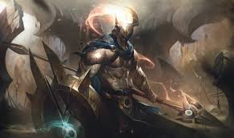
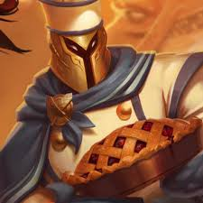

League of Legends (LoL), Riot Games tarafından geliştirilen bir çevrimiçi çok oyunculu savaş arenası (MOBA) oyunudur. Oyuncular, farklı roller üstlenerek rakip takımla mücadele eder.
LoL'un Başlangıcı
League of Legends, 2009 yılında yayımlandı ve kısa süre içinde dünya çapında popülerlik kazandı.
Karakter Resmi


Gelmiş Geçmiş En İyi Şampiyon: Pantheon
Pantheon'un Özellikleri
Pantheon, bir dövüşçü olarak öne çıkar ve oyundaki en güçlü yakın dövüş karakterlerinden biridir.
Yetenekleri
Q-Meteor Mızrağı
W-Kalkan Hucmu
E-Siperli saldırıları
R-Gökkübbenin çöküşü
pasif-Fani Dirayeti
Şampiyon Rolleri
Dövüşçü: Yakın dövüşte etkili, dayanıklı şampiyonlar.
Büyücü: Yüksek yetenek gücüyle rakiplerini alt eden kahramanlar.
Nişancı: Uzak menzilli saldırılarıyla güçlü olan karakterler.
Tank: Takımın en dayanıklı şampiyonları.
Destek: Takımı iyileştiren, koruyan ve kontrol yeteneklerine sahip kahramanlar.
Rollerin Genel Özellikleri
Her bir şampiyon rolü, takımda farklı bir amaca hizmet eder. Takımların başarıları genellikle rol dağılımına bağlıdır.
Öne Çıkan Şampiyonlar
Şampiyon
Rol
Yasuo
Dövüşçü
Lux
Büyücü
Jinx
Nişancı
Malphite
Tank
Thresh
Destek
Pantheon
Dövüşçü
Şampiyon Seçimi
En iyi şampiyonları seçerken oyunun genel stratejisini göz önünde bulundurmak önemlidir.